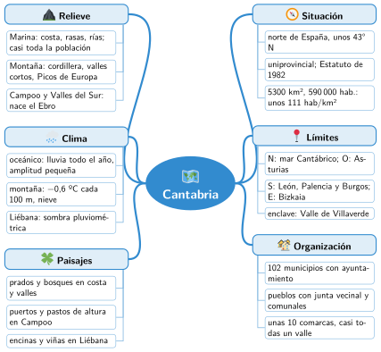

Bloque I · Cantabria, patrimonio natural
UD01 Cantabria
PN: criterios de Patrimonio Natural de Cantabria (2.º ESO). PC: criterios de Patrimonio Histórico Artístico de Cantabria (3.º ESO).
Sesiones
- Sesión 1.1 Situación geográfica y límites
- Sesión 1.2 Organización territorial: municipios y comarcas
- Sesión 1.3 Relieve y principales unidades geográficas
- Sesión 1.4 Clima y paisajes de Cantabria
Al terminar la unidad
Mapa mental de la unidad

✏️ Repasa la unidad con el mapa: tapa una rama y explica en voz alta lo que pone.